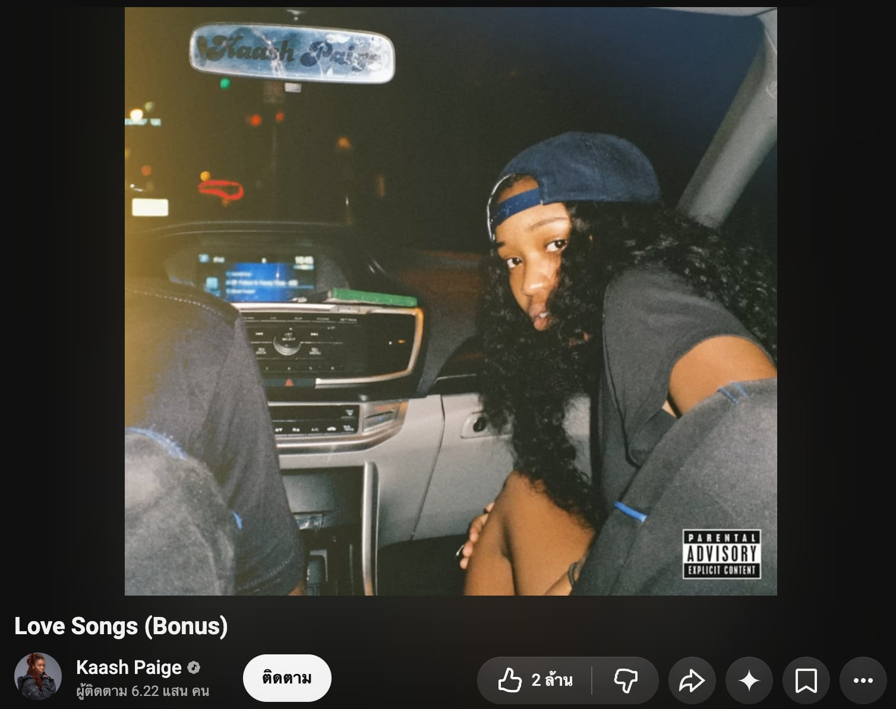

1. About Me

- ชื่อ-สกุล: นายอัฐวุฒิ สามทอง
- รหัสนักศึกษา: 6609613473
- คณะ: วิทยาศาสตร์และเทคโนโลยี สาขาสถิติ
- เพลงที่ชอบ: Love Song
- ฟังเพลงโปรดบน YouTube: ▶ คลิกเพื่อฟังเพลง Love Song
2. What I Built
งาน A2 นี้เป็นการพัฒนาเว็บไซต์ Learning Portfolio ต่อจาก A1 ให้กลายเป็นเว็บไซต์ที่สามารถรองรับการแสดงผลบนอุปกรณ์หลายขนาด (Responsive Web Design) โดยใช้ Bootstrap, Git/GitHub และ GitHub Pages
ส่วนประกอบสำคัญ: มีการจัดเลย์เอาต์ด้วยระบบ Grid System (Rows & Columns) ของ Bootstrap พร้อมตกแต่งด้วย UI Components เช่น Cards, Buttons และ Responsive Images
การทำงานของ Client และ Server: ขณะเปิดไฟล์จากเครื่องตัวเอง จะยังคงเป็นการทำงานฝั่ง Client เพียงอย่างเดียว เว็บเบราว์เซอร์จะประมวลผล HTML, CSS และ JavaScript จาก Bootstrap ให้ทันทีโดยไม่ต้องพึ่งพา Backend Server
3. How I Built It
พัฒนางานนี้โดยประยุกต์ใช้กระบวนการ Issue-driven workflow ร่วมกับ Git/GitHub และ Bootstrap 5 ตามขั้นตอนดังนี้:
- สร้าง Issues บน GitHub เพื่อวางแผนการทำงานทีละส่วน
- เชื่อมโยง Bootstrap 5 CDN เข้าสู่ระบบ HTML
- จัดโครงสร้าง Layout ใหม่ด้วย Bootstrap Grid System (`container`, `row`, `col-*`)
- ทดสอบ Responsive บนหน้าจอคอมพิวเตอร์ แท็บเล็ต และมือถือ
- Commit และ Push โค้ดขึ้น GitHub เพื่อ Deploy บน GitHub Pages
4. Reflection
ปัญหาหรือความท้าทายที่พบ: การทำความเข้าใจ Bootstrap Grid System ในช่วงแรก และการปรับแต่งรูปภาพให้ได้ขนาดสมดุลบนทุกหน้าจอ
สิ่งที่ได้เรียนรู้: เรียนรู้การจัดวางเว็บไซต์ให้รองรับทุกอุปกรณ์ด้วย Responsive Framework และเข้าใจการบริหารจัดการโค้ดแบบ Issue-driven บน GitHub
การพัฒนางานในอนาคต: อยากเพิ่มลูกเล่น Dark Mode, Animations และการดึงข้อมูลโปรเจกต์ผ่าน JavaScript แบบ Dynamic